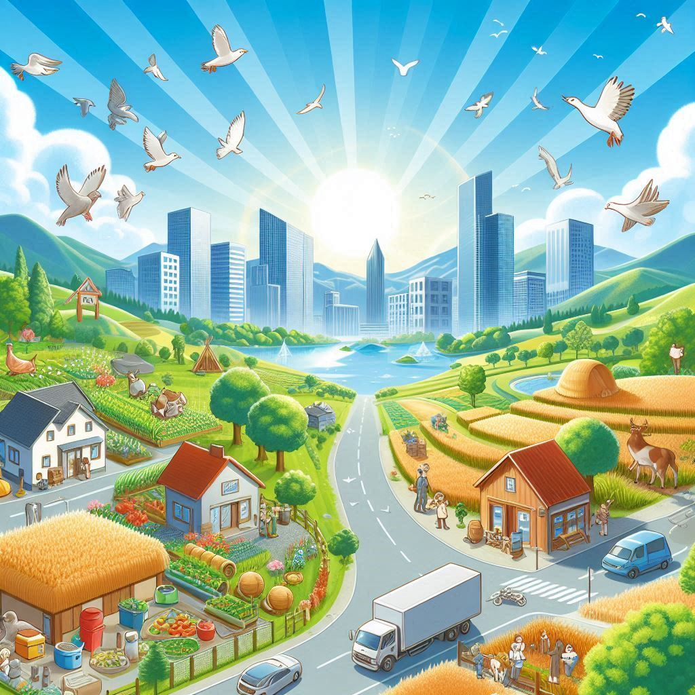

Sobre Nós
Bem-vindo ao "Do Campo à Cidade"!
Somos apaixonados por explorar as riquezas e contrastes que existem entre o ambiente rural e o urbano. Nosso objetivo é conectar as pessoas a essas duas realidades distintas, celebrando o melhor de ambos os mundos e promovendo uma compreensão mais profunda das experiências e estilos de vida que eles oferecem.
Nossa Missão
No "Do Campo à Cidade", nossa missão é inspirar e informar nossos visitantes sobre as diversas facetas da vida no campo e na cidade. Queremos ser uma ponte entre esses dois universos, destacando suas belezas, desafios e a maneira como se complementam.
O Que Fazemos
Conteúdo Inspirador: Compartilhamos histórias, artigos e guias que exploram a vida rural e urbana, oferecendo perspectivas únicas sobre cultura, estilo de vida, trabalho e lazer.
Comunidade: Promovemos um espaço onde os amantes do campo e da cidade podem se conectar, trocar experiências e aprender uns com os outros.
Recursos: Fornecemos informações valiosas e dicas práticas para quem está pensando em se mudar do campo para a cidade ou vice-versa, ajudando a tomar decisões informadas sobre o estilo de vida que mais combina com suas aspirações e necessidades.
